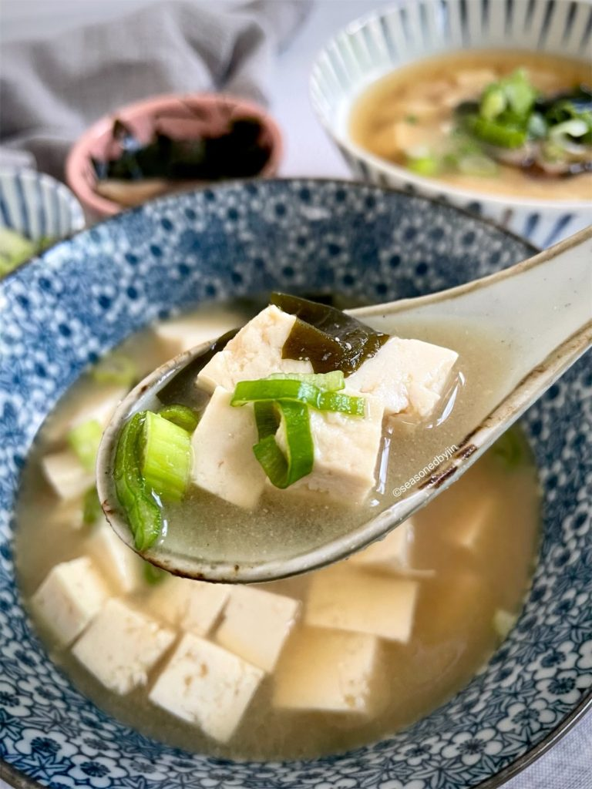
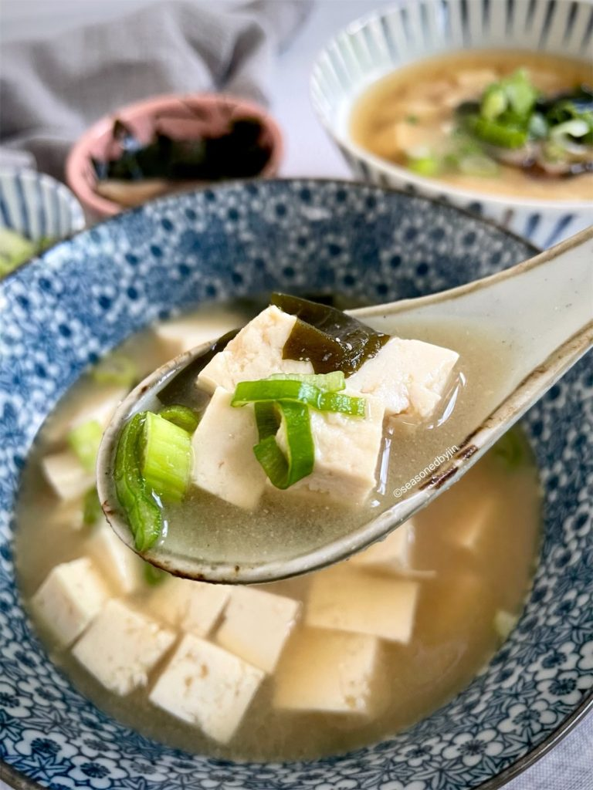

Miso soup is a staple soup in Japanese Cuisine. Its salty and rich flavor is usually paired with rice.
There are thousands of different ways to make miso soup but for this reciple it will be a classic tofu and wakame (seaweed) soup.
This recipe is much better than those instant miso soup recipes or miso you get in most restaurants. Extremely simple with only a few Ingredients
Add miso paste to stock before serving.You can cook ingredients in advance but add miso paste to stock before ready to serve
Never boil miso soup!!! The miso loses nutrients, flavors, and aromas when you boil it. When you warm it up just before boiling is the perfect temperature for the flavors and aromas of the miso.
Add other ingredients!!! You can normally add other ingredients such as green onions, mushroom, daikon, carrots, pork, clams, sea bream, and anything you find tastes good.
Perfect for cold days and good supplement to your meals